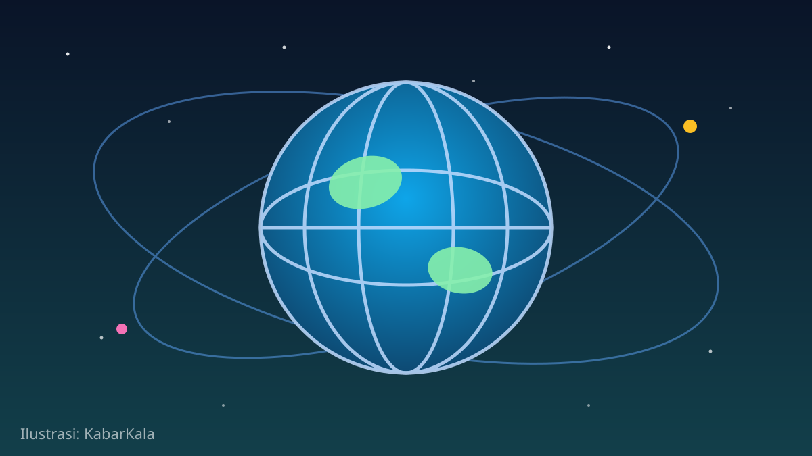

1 / 6

🌍 DUNIA
Sejarah Baru: Israel Buka Paviliun di Pameran Maroko
Marrakech Air Show 2026 jadi panggung partisipasi resmi pertama Israel di pameran pertahanan Maroko sejak Abraham Accords. Geser buat detailnya →
2 / 6
✈️
Pertama kalinya sejak Abraham Accords
Kementerian Pertahanan Israel resmi membuka paviliun nasional di Marrakech Air Show 2026, diumumkan Kamis (8/10). Ini partisipasi resmi pertama Israel di pameran pertahanan Maroko sejak kedua negara menormalisasi hubungan pada 2020.
Pamerannya sendiri digelar dua tahunan, berlangsung 7–10 Oktober di pangkalan Royal Moroccan Air Force di Marrakech, untuk industri aeronautika sipil-militer dan antariksa.
3 / 6
🏭
8 perusahaan bawa teknologi tempur
Delapan perusahaan pertahanan Israel ikut memamerkan teknologi yang disebut "combat-proven" atau sudah teruji di medan tempur. Tiga raksasa ikut hadir: Elbit Systems, Israel Aerospace Industries (IAI), dan Rafael.
Teknologi yang dipamerkan mencakup loitering munitions, sistem robotik bertenaga AI, navigasi otonom untuk drone, laser guidance, sampai komunikasi satelit.
4 / 6
🤝
Pejabat tinggi Maroko datang langsung
Menteri Administrasi Pertahanan Maroko Abdellatif Loudiyi dan Jenderal Mohammed Berrid tercatat mengunjungi paviliun IAI. Kehadiran pejabat setinggi itu jadi sinyal keseriusan Maroko menjalin kerja sama.
Brigjen (purn) Yair Kulas, kepala direktorat kerja sama pertahanan internasional Israel (SIBAT), menyebut langkah ini sebagai "tahap penting" bagi kementerian dan industri pertahanan Israel.
5 / 6
📈
Hubungan dua negara makin naik kelas
Sebulan sebelumnya, Israel dan Maroko sepakat menaikkan level hubungan diplomatik: misi masing-masing jadi kedutaan penuh dan duta besar mulai ditunjuk. Normalisasi keduanya dimulai 2020 lewat Abraham Accords yang didukung Amerika Serikat.
Maroko sendiri disebut-sebut ikut berkontribusi personel untuk rencana pasukan stabilisasi internasional di Gaza — jadi panggung diplomatiknya lagi panas-panasnya.
6 / 6
🤔
Efeknya ke lo apa?
Jauh dari tongkrongan, tapi ngaruh: peta kekuatan industri pertahanan dan diplomatik Timur Tengah lagi bergeser cepat — dan itu bisa berimbas ke harga minyak, arus investasi, sampai stabilitas kawasan yang sering lo baca di berita.
Buat yang ngikutin isu global, ini bahan diskusi berat yang valid. Buat yang nggak terlalu peduli pun, setidaknya lo paham kenapa topik ini rame di headline dunia.